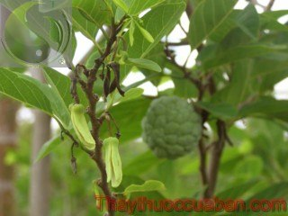

Tên khác:
Tên thường gọi: Na, Mãng cầu, Mãng cầu ta, Màng cầu dai
Tên khoa học: Annona squamosa L.
Họ khoa học: Thuộc họ Na - Annonaceae.
Cây na
(Mô tả, hình ảnh cây na thu hái, chế biến, thành phần hoá học, tác dụng dược lý ....)

Mô tả:
Cây cao 2-8m, vỏ có nhiều lỗ bì nhỏ, tròn, trắng. Lá hình mũi mác, tù hay nhọn, hơi mốc mốc ở phần dưới, hoàn toàn nhẵn, thường là mềm, dài 10cm, rộng 4cm, có 6-7 cặp gân phụ. Hoa nhỏ, màu xanh lục, mọc đối với lá, có cuống dài 2-3cm. Hoa thường rũ xuống, có 3 lá đài màu lục, 3 cánh hoa ngoài hẹp và dày, các cánh hoa ở trong rất hẹp hoặc thiếu hẳn, nhiều nhị và nhiều lá noãn. Quả mọng kép, màu xanh mốc, gần như hình cầu, đường kính 7-10cm, có từng múi, mỗi múi ứng với một lá noãn. Thịt quả trắng. Hạt đen có vỏ cứng.
Bộ phận dùng:
Rễ, lá, quả, hạt - Radix, Folium, Fructus et Semen Annonae Squamosae.
Nơi sống và thu hái:
Gốc ở quần đảo Angti, được đem vào trồng ở nước ta lấy quả ăn. Thịt quả mềm và thơm, ngọt, ngon nhất là Na dai. Các bộ phận của cây có thể thu hái quanh năm, thường dùng tươi.
Thành phần hoá học:
Trong quả có 72% glucose, 14,52% saccharose, 1,73% tinh bột, 2,7% protid và vitamin C. Trong lá có một alcaloid vô định hình, không có glucosid, lá xanh chứa 0,08% dầu. Hạt chứa 38,5-42% dầu, trong đó các acid béo (acid myristic, palmitic, stearic, arachidic, hexadecanoic và oleic) chiếm tỷ lệ lớn. Trong hạt có một alcaloid vô định hình gọi là anonain. Chất độc trong hạt và rễ là các glycerid và các acid có phân tử lớn. Lá, vỏ và rễ chứa acid hydrocyanic. Vỏ chứa anonain.
Tác dụng dược lý
Theo YHCT: Quả na uả xanh làm săn da, tiêu sưng. Hạt Na có vị đắng, hơi hôi, tính lạnh, có tác dụng thanh can, giải nhiệt, tiêu độc, sát trùng. Lá cũng có tác dụng kháng sinh tiêu viêm, sát trùng. Rễ cầm ỉa chảy.
Theo YHHĐ: Quả na có tác dụng như sau:
– Cải thiện chức năng tim: Sự cân bằng giữa natri và kali trong quả na đóng góp rất nhiều trong việc điều chỉnh mức huyết áp và nhịp tim. hàm lượng chất chống oxy hóa tự nhiên và vitamin C phong phú có thể giúp ngăn ngừa các gốc tự do tấn công các chất béo và do đó ngăn chặn được các cholesterol của cơ thể trở thành có hại. Vitamin C còn giúp cơ thể tăng sức đề kháng, chống lại tác nhân gây bệnh. Tất cả những yếu tố này đều tác động tích cực đến tim và cải thiện chức năng tim.
– Giảm táo bón: Một quả na ngon và lành mạnh sẽ chứa nhiều chất xơ và chất xơ đã được chứng minh là rất có lợi cho việc tiêu hóa và bài tiết thức ăn trong cơ thể. Đồng và chất xơ của na hỗ trợ hệ tiêu hóa khỏe mạnh, tăng cường chức năng hoạt động. Sự có mặt của chất xơ giúp việc bài tiết thức ăn nhanh hơn, ngăn ngừa chứng khó tiêu và giảm táo bón hiệu quả. Hàm lượng chất xơ cao trong loại quả này giúp làm giảm cholesterol trong máu. Nó ngăn chặn sự hấp thu cholesterol trong ruột, từ đó, cản trở sự hình thành của các tế bào gây ung thư trong ruột kết và bảo vệ niêm mạc ruột tránh phải tiếp xúc với các chất độc hại.
– Tốt cho não bộ: Trong quả na có khá nhiều lượng vitamin B6. Loại vitamin này rất có lợi cho hoạt động của não bộ vì nó kiểm soát mức độ hóa học thần kinh GABA. Mức độ hóa học thần kinh GABA có tác dụng loại bỏ sự căng thẳng, làm dịu thần kinh dễ bị kích thích và thậm chí điều trị trầm cảm. Chính vì vậy, nếu muốn tốt cho não bộ, hãy ăn na nhiều hơn. Ngoài ra, vitamin B6 thậm chí còn được coi là để giảm bớt nguy cơ mắc bệnh parkinson, do đó, quả na còn có thêm tác dụng phòng bệnh parkinson.
– Phòng bệnh ung thư: Các chất chống oxy hóa trong quả na như một số poly-phenol, asimicin và bullatacinare… được coi là có thể giúp phòng chống các bệnh ung thư, sốt rét và bệnh giun rất hiệu quả.
– Tốt cho mắt: Na là nguồn cung cấp vitamin C, A, riboflavin, vitamin B2 khi đi vào cơ thể sẽ giúp ngăn ngừa sự hình thành các gốc tự do dẫn đến các bệnh về mắt, giúp bạn có một đôi mắt sáng, khỏe mạnh.
Vị thuốc na
(Công dụng, Tính vị, quy kinh, liều dùng .... )
Tính vị, tác dụng:
Quả Na vị ngọt, chua, tính ấm; có tác dụng hạ khí tiêu đờm.
Quy kinh
Vào kinh tỳ vị
Công dụng:
Quả Na dùng chữa đi lỵ, tiết tinh, đái tháo, bệnh tiêu khát. Quả xanh dùng chữa lỵ và ỉa chảy. Quả Na điếc dùng trị mụn nhọt, đắp lên vú bị sưng.
Hạt thường được dùng diệt côn trùng, trừ chấy rận.
Lá Na dùng trị sốt rét cơn lâu ngày, mụn nhọt sưng tấy, ghẻ.
Rễ và vỏ cây dùng trị ỉa chảy và trục giun.
Ở Vân Nam (Trung Quốc), lá dùng trị xích lỵ cấp tính; lá dùng trị trẻ em lòi dom; quả dùng trị phù thũng ác tính.
Ở Thái Lan, lá tươi và rễ dùng trị chấy, mụn nhọt, nấm tóc và lang ben.
Ở Ấn Độ, rễ được dùng gây xổ; hạt, quả và lá dùng diệt côn trùng, duốc cá, diệt chấy; hạt kích thích và gây sảy thai.
Liều dùng:
Liều lượng không cố định đối với lá, quả, thân, rễ...
Ứng dụng lâm sàng của vị thuốc na
Đi lỵ ra nước không dứt:
10 quả Na ương (chín nửa chừng) lấy thịt ra, còn vỏ và hạt cho vào 2 bát nước, sắc còn một bát, ăn thịt quả và uống nước sắc.
Nhọt ở vú:
Quả Na điếc mài với dấm bôi nhiều lần.
Sốt rét cơn lâu ngày.
Vò một nắm lá (20-30g) giã nhỏ, chế thêm nước sôi vào vắt lấy một bát nước cốt, lọc qua vải, phơi sương, sáng hôm sau thêm tí rượu quấy uống trước lúc lên cơn hai giờ. Mỗi ngày uống một lần, uống liền 5-7 ngày.
Mụn nhọt sưng tấy:
Lá Na, lá Bồ công anh, cũng giã đắp.
Giun đũa chòi lên ợ ra nước trong:
Dùng một nắm rễ Na mọc về hướng Đông, rửa sạch, sao qua, sắc uống thì giun ra.
Trừ chấy, rận:
Giã nhỏ hạt lấy nước gội đầu hay ngâm quần áo. Để trừ chấy, giã nhỏ hạt Na trộn với rượu hoặc giấm mà vò vào đầu, xát vào chân tóc, bịt khăn lại, giữ 15 phút rồi gội đầu. Tránh không cho va vào mắt vì có độc.
Chữa răng bị đau nhức:
Lấy hạt na giã nhỏ ngâm rượu, rồi lấy rượu đã ngâm hạt na ngậm vào chỗ răng sưng đau, sau ngậm chừng 10 - 15 phút thì nhổ nước này đi. Ngày cần ngậm vài ba lần.
Trị viêm họng:
Quả na điếc 50g, sinh địa 50g, rễ xạ can 30g, nhân hạt gấc 20g, lá bạc hà 50g, cam thảo dây 25g, lá chanh 25g, lá táo 25g. Tất cả phơi khô (riêng quả na điếc đốt tồn tính), và cùng giã nhỏ tán bột mịn, rồi trộn với 150g đường kính đã nấu thành xi rô làm thành hoàn mỗi viên nặng 0,5g. Người lớn ngày uống 2 lần, mỗi lần uống 3 - 4 viên. Trẻ em tùy tuổi mà ngày uống từ 3 - 6 viên chia 2 lần. Cần uống 3 - 5 ngày.
Chữa sốt rét:
Quả na điếc 40g, giun đất (loại khoang cổ) 80g, phèn phi 20g, quả na điếc đập vỡ vụn, tẩm rượu sao vàng, giun đất lộn ruột ra ngoài, rửa sạch và tẩy rượu, phơi khô, sao vàng. Hai thứ lại trộn với phèn phi, tán bột mịn và luyện với nước tỏi làm hoàn bằng hạt đậu xanh, ngày uống 2 lần, mỗi lần 10 viên.
Hoặc lấy lá na 20 - 30g, giã nhỏ, chế thêm nước vắt lấy 1 bát nước cốt, lọc qua vải, phơi sương, sang ngày sau cho chút rượu khuấy và uống trước khi lên cơn sốt rét khoảng 2 giờ. Mỗi ngày uống 1 lần, cần uống liền từ 5 - 7 ngày.
Tham khảo
So sánh
Na có loại na dại, na rừng và na vườn. Do đó cần phân biệt, lựa chọn đúng loại trong sử dụng.
Kiêng kị
- Chỉ nên ăn những quả na đã chín. Na chưa chín ăn sẽ có vị chát và có thể gây ra các vấn đề về tiêu hóa
- Hạt na có độc, không được uống. Nhưng nếu khi ăn quả na, sơ ý nuốt phải hạt thì không sao, vì hạt na có vỏ dày và rất cứng bao bọc, ngăn không cho nhân hạt tác dụng với môi trường nên không gây độc.
- Đối với những người mắc bệnh tiểu đường thì cũng không nên ăn nhiều na bởi trong na có hàm lượng đường tương đối nhiều.
Tham khảo thêm cách chọn na ngon:
– Lựa quả gai to, màu trắng ngà không thâm đen và nứt nẻ.
– Bạn nên chọn quả tròn, mắt to, kẽ mắt trắng, da xanh non, cuống nhỏ, chín mềm không nứt.
– Lựa quả có vỏ mỏng, mắt nở và phẳng, hơi nứt nhưng vẫn còn cuống, đó là mảng cầu chin cây, ăn ngọt và thơm
Na không chỉ là một loại cây ăn quả có giá trị dinh dưỡng cao, tốt cho người già, người mới ốm dậy, phụ nữ sau khi sinh mà Na cũng là một vị thuốc quý. Ở Việt Nam cây na được trồng chủ yếu với mục đích lấy quả. Na được trồng ở nhiều nơi trên khắp đất nước. Khách hàng có thể tìm mua các bộ phận của cây na tại địa phương mình sinh sống.
Tag: cây Na, vi thuoc Na, tac dung cua Na, cong dung cua Na, thuoc nam
Thaythuoccuaban.com Tổng hợp
*************************